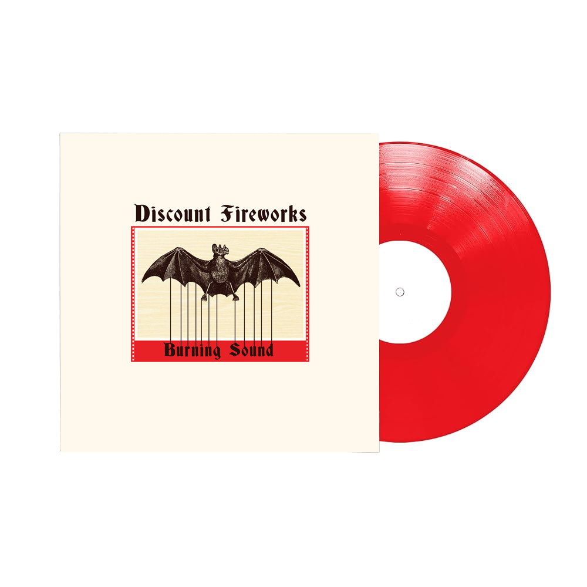

On vinyl at our shows now. Vinyl and Bandcamp online December 4. Streaming services follow in the new year.
We couldn’t be more excited about this record. It kicks off with the blistering single and title track, "Burning Sound." From there, "Only" effortlessly traverses time signatures, layered with sax and trombone, while "Lightmare" gets massive with rich cello and a bombastic rhythm section. We sprinkle interstitial pieces to bring you along on this adventure. "Almost Home" rounds things out with textural organ, guiding you through oddly jaunty verses and anthemic choruses begging you to “Save the soul of the song!”
It’s a dynamic journey that we can't wait to get out into the world.
The Packaging: Hand-crafted and collectible. The music makes a statement, and the physical presentation does too.
The Record: 10” red vinyl at 33 1/3 RPM, limited to 100 copies, $35. Every copy includes a download code.
The Cover: Designed and letterpressed by Jeff Mueller (Dexterity Letterpress). Jeff has created iconic letterpress work for bands like Shellac, Yo La Tengo, Palace, Bardo Pond, Savak, and others; alongside his own legendary projects (Rodan, June of 44, Shipping News).
The Detail: Each heavy-stock 10" jacket is individually letterpressed with Jeff's design and has our logo embossed into the back cover.
The Sound: Three songs are mixed by Travis Harrison, best known for his long time collaboration with indie-rock legends, Guided By Voices (producer, engineer, mixer, live FOH and collaborator). Additionally he has worked with Built to Spill, Savak, The Boredoms, Fred Armisen, OK Go, The Men, Dope Body, and many more.
The Supporting Cast: We invited our friends to the party, making this album greater than the sum of its parts: Karyn Watts (Civic Orchestra of New Haven) makes "Lightmare" bigger and more menacing with her cello. Ska legend Vinny Nobile (Bim Skala Bim, Pilfers, Cenzo) injects atmosphere and hype into "Only" with his trombone blasts and bleats. Richard Brown (Mark Mulcahy/Miracle Legion, The Sawtelles, Happy Ending) adds sax and guitar, steering "Only" and "Pinnacles" to deeper places. Scott Amore (Mark Mulcahy/Miracle Legion, The Butterflies of Love, Famous Problems) layers texture and tension onto "Almost Home" with his Leslie organ. And Stella Vlad (Least Best Beast, Speakeasy Tattoo) closes the record with witchy wisdom on the finale "Burning Out."
It's not just a record. It's a beautifully crafted, limited-edition art piece.
Want to review the record, play it on the radio, talk with us or book a show? We'd love to hear from you.
Joe Sepi & Discount Fireworks
joe@joesepi.com | +1 (917) 969-0338
Instagram
Joe Sepi - guitar + vocals
Jeff Maleri - bass + vocals
Ben Myers - drums + vocals
Vinny Nobile - trombone, vocals
Richard Brown - saxophone, guitar
Karyn Watts - cello
Scott Amore - organ
Stella Vlad - strega stellanonna
Engineered and recorded by Ben Myers and Joe Sepi at The Illuminated Loft except Burning Out recorded at Ben’s house.
Travis Harrison mixed Lightmare, Only, Almost Home
Matt Labozza mixed Burning Sound
Mastered by Carl Saff
Cover art and letterpress by Jeff Mueller
Additional design help by Tim Smith
If you've read this far, please enjoy some live Discount Fireworks from July 2, 2026 at Cafe Nine in New Haven, CT
Thank you. Please come again.
💥 🤘 💥